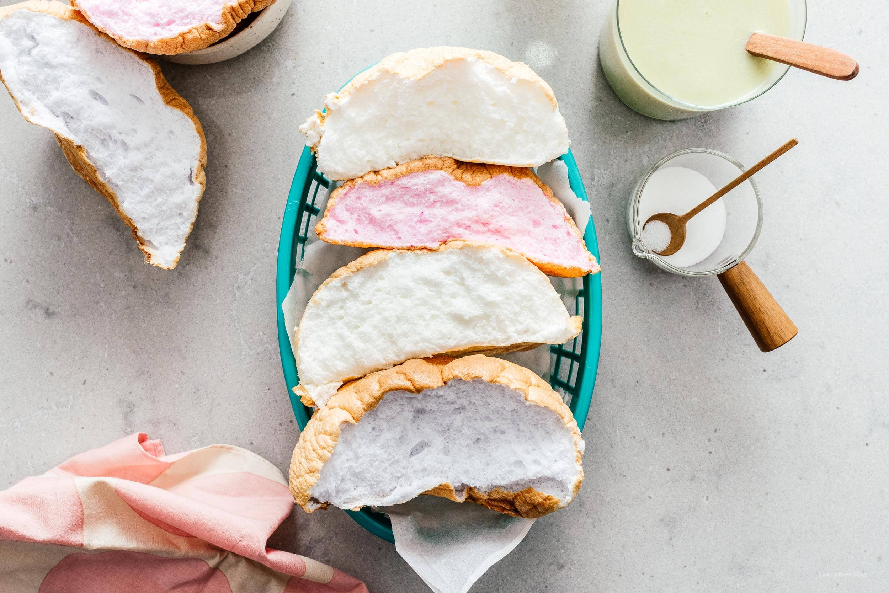

cloud bread
cloud bread

ready for a fun and delicious delicacy! well you're at the right place! to learn how to make cloud bread, keep reading!
Ingredients:
- Egg whites
- Sugar
- Cornstarch
- Food coloring (optional)
Steps:
- Whip the egg whites. Add your egg whites to a very clean, grease free bowl. Start to whip your egg whites on medium-low, until frothy and pale.
- Stir in sugar. Add the sugar, a little bit at a time on high, until the sugar dissolves and the egg whites start to foam up.
- Add the cornstarch. I like to sift the cornstarch in so that there are no lumps. Continue to whip on high until the egg whites become a glossy thick meringue that holds a peak. The egg whites are done when you lift the beater from the bowl and they hold a peak and look smooth and creamy like shaving cream If you tilt the bowl, the whites should not slide. Be careful not to over whip!
- Shape the cloud. Use a rubber spatula to scoop out the meringue and shape into a cloud on a parchment paper lined baking sheet.
- Bake. Bake in a low oven until golden and cooked through.